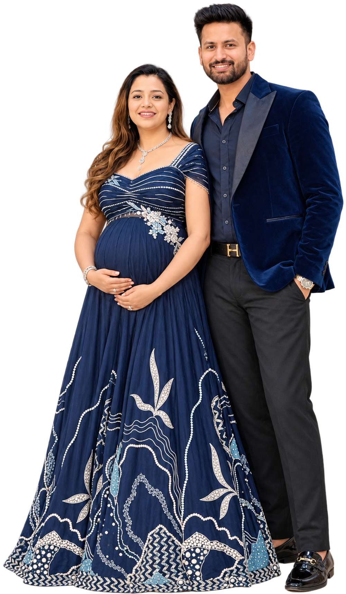

Twinkle, twinkle, little star…
how we wonder
who you are.
A little someone is on the way
Pink?
?
Blue?
Pink or blue, we can hardly wait —
and the love is already here.
Please join us for our
Baby
Shower
With love
Simran & Akshat
Counting down the days

Sunday
13
September
four o’clock in the afternoon
Venue
Upstairs Bar & Kitchen
ITL Twin Tower, 2nd Floor
Netaji Subhash Place, New Delhi
Come celebrate
with us
Your presence is the only gift
we could wish for.
Simran & Akshat
13 · 09 · 2026